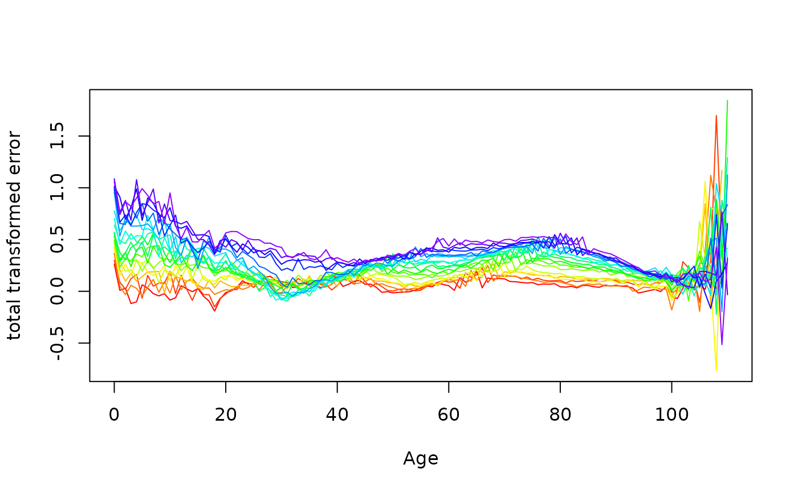
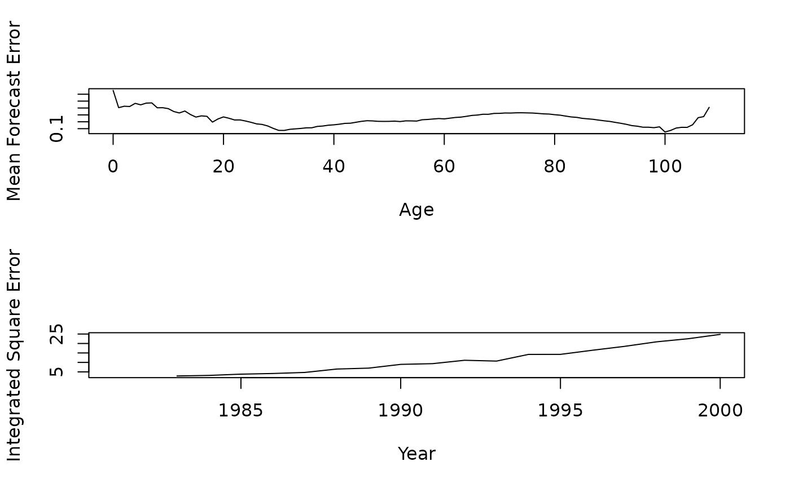

Computes mean forecast errors and mean square forecast errors for each age level. Computes integrated squared forecast errors and integrated absolute percentage forecast errors for each year.
Demogdata object such as created using
read.demogdata containing actual demographic rates.
Demogdata object such as created using
forecast.fdm or forecast.lca.
Name of series to use. Default: the first matrix within
forecast$rate.
Ages to use for comparison. Default: all available ages.
Upper age to use for comparison.
Years to use in comparison. Default is to use all available years that are common between data and forecast.
If TRUE, all zeros in data are replaced by interpolated estimates when computing the error measures on the log scale. Error measures on the original (rate) scale are unchanged.
Object of class "errorfdm" with the following components:
Name of region from which data taken.
Ages from data object.
Years from data object.
Matrix of forecast errors on rates.
Matrix of forecast errors on log rates.
Various measures of forecast accuracy averaged across years. Specifically ME=mean error, MSE=mean squared error, MPE=mean percentage error and MAPE=mean absolute percentage error.
Various measures of forecast accuracy integrated across ages. Specifically IE=integrated error, ISE=integrated squared error, IPE=integrated percentage error and IAPE=integrated absolute percentage error.
If data$type="mortality", function
returns this component which is a matrix containing actual, forecast and
actual-forecast for life expectancies.
Note that the error matrices have different names indicating if the series forecast was male, female or total.
fr.test <- extract.years(fr.sm,years=1921:1980)
fr.fit <- fdm(fr.test,order=2)
fr.error <- compare.demogdata(fr.mort, forecast(fr.fit,20))
#> Warning: No population data available for combining upper ages
plot(fr.error)

par(mfrow=c(2,1))
plot(fr.error$age,fr.error$mean.error[,"ME"],
type="l",xlab="Age",ylab="Mean Forecast Error")
plot(fr.error$int.error[,"ISE"],
xlab="Year",ylab="Integrated Square Error")
